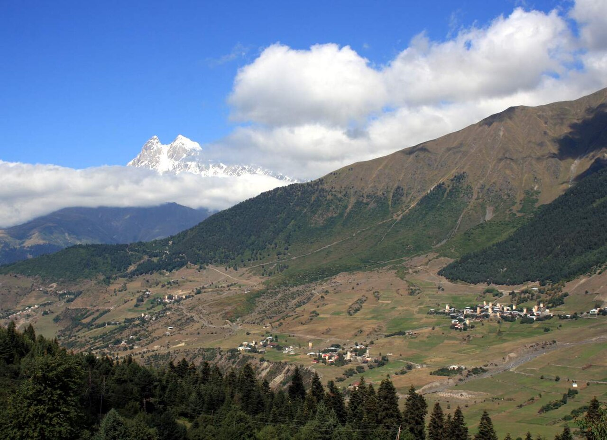

Ключи

Разувайтесь у порога, а сапоги поставьте к печке, иначе к утру они у вас встанут колом. Снег у нас в феврале такой, что и в доме от него не спрячешься: вы его на себе принесли целый сугроб. Садитесь вот сюда, на лавку у огня. Это место хозяина. Хозяин его вам уступает, потому что вы первый гость в этом доме за тридцать девять лет. Он ещё сам об этом не знает, он на кладбище, расщепляет факелы. Придёт и узнает.
Это не мой дом. Мой через дорогу, вон с той башней, у которой верх обвалился. А этот дом Бесо Квициани, моего соседа, царствие ему небесное. И ключ от него тридцать девять лет висел у меня на гвозде, вместе с другими. Вот они, на этом шнурке, видите? Одиннадцать штук. Нет, сегодня уже десять. Сегодня утром я один сняла и отдала. Руки до сих пор не могут понять, что их стало легче.
Вы, наверное, слышали про зиму восемьдесят седьмого года. Снег пошёл в середине декабря и шёл, пока мы не перестали считать дни. Сначала радовались, потому что снег в горах к урожаю. Потом начали откапывать двери. Потом перестали откапывать двери и стали вылезать через окна второго этажа. А в январе пошли лавины. Ночью слышишь гул, как будто по крыше катят бочку, и лежишь и гадаешь, к кому. Одно село рядом засыпало целиком, вместе с людьми. Я туда ходила потом с мужем откапывать и больше про это ничего говорить не буду, вы уж не обижайтесь.
А в начале февраля пришла бумага: кто в опасной зоне, тех переселяют. Насовсем. Внизу, говорят, приготовлены дома, земля, работа. Половину Мулахи увезли за одну неделю. Квициани поселили в Удабно. Вы там бывали? Это за Сагареджо, в сторону Гареджи. Полупустыня. Бесо потом писал мне, что в первую весну вышел утром во двор и не понял, куда делись горы. Стоит и смотрит, а вокруг ровно, как на столе, и ни одного дерева, за которое можно зацепиться глазом. Он мне писал: «Мы тут, как рыба на сковородке, всё видно и спрятаться некуда».
Наш дом стоял не в опасной зоне, а на полкилометра выше. Нам предлагали тоже, но не заставляли. Муж мой сказал: если все уедут, кто будет зажигать Лампробу? Это он, конечно, гордо сказал, при людях. А ночью сказал мне правду: сыну четыре года, он тут родился, я хочу, чтобы он и дальше знал, где север. Без гор человек север теряет. Так мы и остались.
Соседи уезжали быстро. Машины ждали внизу, на дороге, вещи несли на себе. Брали одежду, документы, иконы, кто-то тащил даже прялку. А мебель оставляли, куда её денешь. И каждый, кто уезжал, приходил ко мне и вешал ключ на гвоздь. Говорили: мы ненадолго, только пока снег сойдёт. Говорили: присмотри. Говорили: если что, ты знаешь, где у нас что. Бесо пришёл последним, когда машина уже гудела. Повесил ключ и сказал: «Лампроба через неделю. Наши мёртвые тут остаются. Не дай им замёрзнуть».
Вы про Лампробу слышали? Её теперь показывают туристам в Местии, с барабанами и с телевидением. А у нас по-старому. За несколько недель до Великого поста, в середине февраля, мужчины рубят берёзу, делают факелы, расщепляют верхушку, чтобы лучше занялось, и вечером идут на кладбище. Каждый мужчина в семье несёт свой. Старики говорят, что раньше так считали воинов: сколько в доме факелов, столько в доме мечей. Другие говорят, что огнём греют предков, чтобы им было светло до весны. А женщины накрывают стол прямо на снегу, перед могилами, и ставят свечи на камни. Пьют сначала за Бога, потом за святого Георгия, потом за Богородицу, а потом уже за тех, кто под снегом. Порядок такой, его не я придумала, и не мне его менять.
В ту первую Лампробу, через неделю после отъезда, муж понёс шесть факелов. Один наш и пять за соседей, за тех, у кого на нашем кладбище лежали деды. Я шла за ним с корзиной и считала, сколько огней на склоне. В прошлый год было как будто звёзды упали на кладбище, а тут смотрю, а огней по пальцам пересчитать. Муж воткнул факелы у чужих могил и каждому мёртвому сказал по-свански: «Твои живы. Они внизу. Они не забыли, это я за них». Я тогда подумала, что он не мёртвым это говорит, а себе.
Так и пошло. Каждый год. Сначала муж носил. Потом сын подрос и носил вместе с ним. Потом сын уехал учиться в Кутаиси, там женился и там остался. Он хороший сын, каждую Лампробу приезжает, если дорогу не закроет. Но дорогу закрывает часто. А потом муж мой умер, и в тот год факелы понесла я.
По закону факел несёт мужчина. Я это знаю не хуже вас. Наш священник, когда увидел меня в первый раз, ничего не сказал, только перекрестился. А на следующий год подошёл и помог воткнуть. Так что считайте, что закон у нас немного подвинулся, как дом от лавины. Стоит, но уже под углом.
С каждым годом факелов становилось меньше. Не потому, что я уставала. Соседи писали из Удабно, из Марнеули, из Тбилиси: умер Бесо, похоронили там. Умерла его жена. Похоронили там. А у кого все старики легли уже внизу, к тем на наше кладбище и носить вроде стало некому, мёртвые переехали вслед за живыми. Ключи я всё равно не снимала. Раз в год, весной, обходила дома, открывала ставни, проветривала, проверяла крыши. Вы сейчас сидите в доме, где всё как в восемьдесят седьмом. Посмотрите на стену. Календарь. Январь. Никто не перевернул лист, потому что в феврале тут уже никого не было. Чашки на полке, стол, комод с зеркалом, как у моей бабушки. Тут время не остановилось, его просто заперли.
А этой осенью приехал внук Бесо, Лаша. Он родился уже в Удабно и в горах раньше был всего один раз, ребёнком, на похоронах. По-свански он знает «здравствуй», «спасибо» и «не трогай мой хлеб», это его дед научил. Остальное понимает по лицу. Работал в Тбилиси, в банке, а потом сказал жене, что хочет к деду в дом. Жена, умница, не стала с ним спорить. Сказала только: «Хочешь к деду — езжай. Но если там нет интернета, я к деду не поеду». Интернет у нас теперь есть, так что она приедет весной.
Он хочет сделать тут гостевой дом. Туристы теперь доходят даже до нас, Местия им стала тесная. Он мне всё рассказал: где будет душ, где будет ваша комната, как он назовёт дом. Хорошо рассказал, по-деловому, как в банке. А я сидела и думала, что сейчас мне надо снять с гвоздя ключ. Это мне было труднее, чем нести шесть факелов по сугробам.
Не потому, что мне дом жалко, он не мой. И не потому, что Лаша плохой, он мальчик хороший. А потому, что тридцать девять лет я была при этом доме сторож. Сторож при чужой жизни. И вот приходит хозяин, а я кто? Никто, соседка через дорогу. Я ему сегодня ключ отдала, а он его даже в замок не сразу попал, руки дрожали. Открыл дверь, вошёл и стоит. Смотрит на календарь. Потом говорит: «Бебо, можно я лист не буду переворачивать?» Я говорю: дом твой, сынок, делай что хочешь. А он: «Тогда пусть висит. Туристам скажу, что это дизайн». Смеётся, а глаза мокрые.
Сегодня Лампроба. Лаша сейчас на кладбище, у деда Бесо. Нет, Бесо лежит в Удабно, а тут лежат его отец и дед. Лаша сам срубил берёзу, я ему только показала, какую. Сам расщепил, порезал палец, как положено. И пойдёт сам. А у меня в корзине в этом году на один факел меньше. Утром я его отложила и не знала, куда девать. Положила в печку. Пусть хоть тут погорит.
Вы смотрите на мои ключи. У вас тоже где-то остался дом, правда? Вы мне не говорите, у кого от него ключ, я по лицу вижу, что у кого-то есть. Это хорошо. Значит, кто-то там открывает весной ставни. Скажите этому человеку, когда будете звонить, чтобы ключ не снимал с гвоздя, пока вы сами за ним не придёте. Даже если придёте через сорок лет. Ключ на гвозде — это значит, что вас ждут.
А теперь ешьте, остынет. Это мерцви. В Тбилиси это называют ташмиджаби и подают в ресторанах. Но в ресторанах не так. Там не знают главного: в середине делают ямку и наливают туда топлёное масло. Масло для гостя. Хозяин гостю ямку делает, а сам ест с краю. Сегодня я её сделала. Потому что Лаша ещё не умеет, а гость не ждёт. Но завтра будет делать он. Я ему сказала: хозяин — это не тот, у кого ключ, а тот, кто наливает масло. Он записал в телефон. Ну и вы запишите. А потом доедайте, берите мою корзину, и пойдём на кладбище. Стол там уже стоит на снегу, свечи ждут, а Лаша, я думаю, давно зажёг и стоит один, не знает, что говорить деду. Я ему подскажу. Я эти слова тридцать девять лет говорила.
Мерцви (ташмиджаби) — сванское пюре с сыром
На 4–6 порций.
Что нужно
картофель — 1 кг, лучше рассыпчатый
молодой сулугуни или свежий имеретинский сыр — 500 г
молоко — 150–200 мл (можно горячую воду)
соль — по вкусу (смотрите по солёности сыра)
топлёное или сливочное масло — 50–80 г, для подачи
сванская соль — к столу, по щепотке
1. Отварите картофель в кожуре до мягкости, примерно 25–30 минут.
2. Слейте воду и дайте картофелю остыть сам по себе. Холодной водой не обливайте: картошка от неё дубеет и теряет вкус. Очистите её ещё тёплой.
3. Разомните картофель в кастрюле с толстым дном в гладкое пюре.
4. Сыр натрите на крупной тёрке или раскрошите руками.
5. Влейте в пюре горячее молоко и поставьте кастрюлю на самый слабый огонь. Добавляйте сыр по горсти и мешайте деревянной ложкой, пока он не расплавится. Масса должна стать гладкой и тянуться за ложкой.
6. Посолите, если сыр несолёный, и сразу снимите с огня.
7. Выложите мерцви на блюдо, в середине сделайте ложкой ямку и налейте в неё растопленное масло. Подавайте сразу, горячим, со сванской солью и хлебом.
Мерцви едят сразу: остывая, сыр перестаёт тянуться. В Ушгули это блюдо называют мерцви, в Ленджери — шуша, а по всей Грузии оно известно как ташмиджаби.
Тбилиси, ноябрь 2026